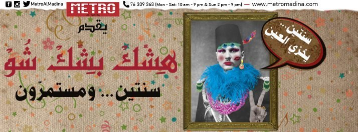

من عرض "هشك بشك شو" المسرحي في بيروت
عند الطرف الشمالي الشرقي من كورنيش بيروت نجد تمثالًا بارزًا للرئيس المصري السابق جمال عبد الناصر. وإذا عبرت الشارع للوصول إلى جانب البحر سوف تجده يقف خلفك شاهقًا كتذكرة بعصور أخرى.
يرمز تمثال عبد الناصر إلى العلاقة شديدة الاضطراب بين مشروع مصر العربي القومي وإرثه الثقافي. وعلى الرغم من أن عبد الناصر لم يخترع القومية العربية—حيث نجد أثارها في جهود وكتابات قديمة لكتاب من الشام تعود إلى الستينيات من القرن التاسع عشر—إلا أن رؤيته في مرحلة ما بعد الاستقلال للجبهة العربية الموحدة أمام القوى الاستعمارية والإمبريالية كانت شرارة ألهمت آمال وطموحات الملايين في أنحاء العالم العربي.
عرض "هشك بشك شو": محاكاة ساخرة للتراث المصري
من أكثر الأشياء الدالة على طبيعة تلك العلاقة وكيفية إعادة إنتاجها العرض المسرحي "هشك بشك شو،" الذي قدمه وأنتجه مترو المدينة في بيروت. قدم هذا العرض للسنة الثانية وهو منسوب إلى عروض الكباريهات ("عرض غنائي موسيقي يحاكي موسيقى الأفراح والكاباريهات التي كانت منتشرة في مصر في النصف الأول من القرن الماضي. أربع لوحات تتضمّن عشرات الأغنيات يؤديها عشرة فنانين موزعين بين موسيقيين، مغنين، ممثلين وراقصين يأخذوننا إلى تلك الحقبة من الزمن الجميل.")، وقد جال وطاف في العديد من الأماكن، وخلال الفترة التي قضيتها في بيروت قبل بضعة أسابيع كان العدد كاملًا كل ليلة.
والحقيقة إني عندما حاولت حضور العرض كانت جميع الأماكن محجوزة واضطررت إلى الجلوس على الدرج بجوار الممر طوال العرض.
"هشك بشك" عبارة مصرية (وهي على الأغلب تحريف لكلمة مستعارة من التركية) تشير إلى العروض المشابهة لعروض الكباريهات، خصوصًا تلك التي تعد خليعة أو بذيئة. وانطلاقًا من هذا المصطلح يقدم عرض "هشك بشك" على مدار ساعتين إعادة تمثيل للأغاني المصرية الرائجة من الأفلام المصرية، بدءًا من "قل لي ولا تخبيش يا زين" لأم كلثوم من فيلم "سلامة" (1944) ومرورًا بأغنية "يا حسن يا خولي الجنينة" لشادية من فيلم "ليلة الهنا" (1951)، وصولًا إلى "حبيبي يا رقة" لهند رستم من فيلم "اعترافات زوج" (1951)، وحتى أغاني ليلى نظمي التي أحيت فيها التراث المصري الشعبي في السبعينيات.
لا تتبع الفقرات المعاد تمثيلها التسلسل الزمني ولا أي تسلسل منطقي. وبدا أن ترتيب الأغاني يعتمد على الحالة المزاجية والتقارب الموسيقي.
جمهور متحمس وافتتان مشؤوم بالماضي
الأمر الذي وجدته خارجًا عن المألوف ومحيرًا كان شدة حماس الجمهور في استقباله للموسيقى والعرض (وهم يحفظون كلمات الأغاني عن ظهر قلب) رغم أن العرض لا يقتصر على إعادة التقديم. فهو عبارة عن إعادة تأويل محاكية تهكمية تسخر من الأعمال الأصلية وتسخر من ذاتها لسخريتها من الأعمال الأصلية. ويلجأ المؤديون إلى المبالغة والحركات الهزلية وكل أنواع الإيحاءات البذيئة والعبثية.
ربما تظهر تلك الإشارة المستمرة إلى الماضي في أوضح صورها في إعادة تقديم أغاني ليلى نظمي في عرض "هشك بشك." لم يكتفِ العرض بتقليد طريقة غنائها وصوتها فحسب، بل قدم أيضًا إعادة تصور وتمثيل للزي المصري "التقليدي" وحركات الرقص المصرية. حتى التعليقات الموجهة ردًا على الجمهور كانت باللهجة المصرية.
ليلى نظمي وتحويل الهوية القومية إلى ولع
تخرجت نظمي من المعهد العالي للموسيقى في عام 1968، وعملت على جمع الأغاني الشعبية كجزء من رسالتها عن الموسيقى المصرية الشعبية في أوائل السبعينيات. أطلقت بعدها ألبومًا يحتوي على جزء من تلك الأغاني، استخدم فيه العديد من التعابير والمصطلحات الشعبية. نجح الألبوم وتفوق في مبيعاته في وقت ما حتى على مبيعات أم كلثوم.
بعد عقود من ذلك قامت المغنية اللبنانية مروة بالسطو على موسيقى ليلى نظمي وإعادة توزيعها بشكل أكثر إثارة (ما أصاب نظمي بصدمة شديدة وأثار استيائها). عكست طريقة غناء مروة ورقصها المليئة بالإيحاءات تغيرًا في استقبال وفهم الموسيقى في عالم ما بعد القومية العربية. كان ذلك نوعًا مختلفًا من الولع، تشير ظواهره إلى الهوس بالهوية القومية المصرية: فبدلًا من استعراضها أو ترويجها بشكل شعبي كما حاولت نظمي أن تفعل، أصبح الغرض عدم أخذها بجدية بالغة، بل والسخرية منها أيضًا.
وكان ذلك توجهًا اتبعته مغنيات لبنانيات أخريات، مثل هيفاء وهبي عندما غنت أغنية "رجب" في ألبوم "بدي عيش" (2005) من إنتاج شركة روتانا.
بين الافتتان والسخرية: تناقضات الحاضر العربي
يأتي هذا التهميش للمثل الناصرية والصدارة العربية بعيدًا كل البعد عن ما شهدته الحقبة الناصرية من هوس بكل ما هو مصري، ليصب في قلب إعادة التقديم وإعادة الاستيلاء الثقافي بهذا الشكل. ويبدو أن تحطيمها أو إظهارها بشكل هزلي أو جنسي يبدد سحرها. لكن البعض قد يرى أن هذه الظاهرة تكشف أيضًا عن تدهور الذوق العام وعدم قدرة الجمهور على التمييز.
في تلك الأثناء لم يكف المشهد الصوتي في بيروت عن إدهاشي—نجد أم كلثوم ومحمد عبد الوهاب حاضرين طوال الوقت، حيث تذاع أغانيهما في كل مقهى بالحمراء تقريبًا. كما رأيت صور عبد الناصر معلقة في إجلال وتقدير واضح في الكثير من المطاعم والمقاهي التي زرتها. وخلال أحاديثي مع العديد من اليساريين هناك لم تخلُ جملهم من الإشارة إلى الخطاب الناصري العربي القومي بمختلف تعبيراته الاصطلاحية.
يقع عرض "هشك بشك" تحديدًا عند نقطة تقاطع هاذين الواقعين—واقع مفتون بالمشروع الناصري وما زال هائمًا في عالمه، لا ينفك عن استفراغ مثله وأقواله المأثورة، وواقع آخر أكثر سئمًا، يعيد تقديم ما أنتجته الحقبة الناصرية ثقافيًا بشكل أقرب إلى الكيتش ويحمل قدرًا من الافتعال والوعي الزائد بالذات.
تراث باهر وحاضر بائس
بصفتي مصري أوجه أقصى درجات النقد لما فعله ناصر ببيعه وهم وطن عربي لشعب فخور ومزدهر. فالفخر والازدهار لا يأتيان من خلال الحكومات الفاسدة والمستبدة. لكني في الوقت نفسه شعرت بالإنزعاج من إعادة الاستيلاء الثقافي بهذا الشكل المتبجح. ما الذي يمكن فعله بتراث باهر وحاضر بائس؟ كيف سيتعامل سائر العرب مع انقضاء الهيمنة؟
لا يعني ذلك أن نقلل من شأن الجانب الباهر والطموح منه، بل علينا أن نوفق بيه وبين واقعنا الحاضر.
تطرح العلاقة الإشكالية بين المشروع الناصري في لبنان وما يمثله من خلال العروض المحاكية رؤية لاذعة لما تبقى وسبب بقائه. كما تسلط الضوء على الحاجة إلى تجاوز ولعنا وهوسنا. إذا لم نتمكن من أخذ الأمر على محمل الجد، بوسعنا على الأقل أن نستمتع بالضحك والسخرية منه.